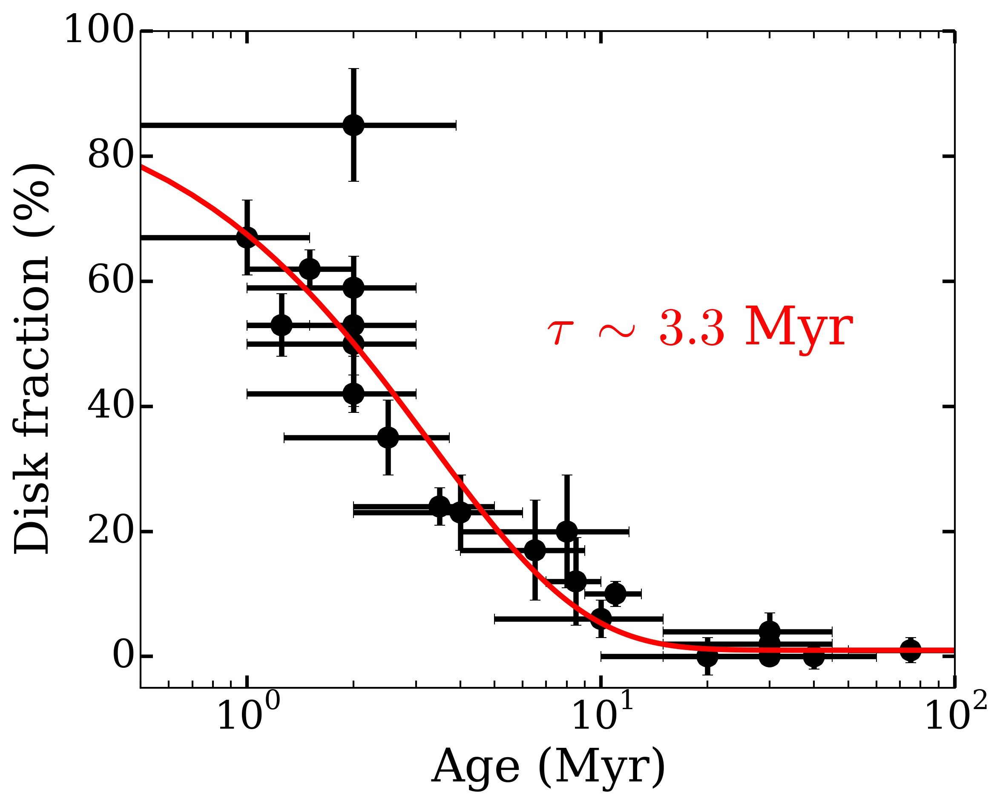
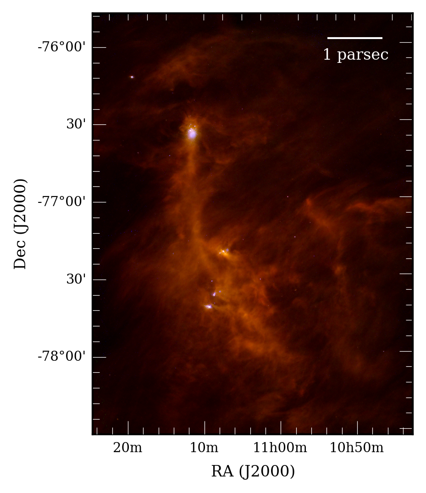

My research focusses on the disks of gas and dust that are found around newborn stars. Planets form in these disks, so their characteristics are crucial to understand the huge diversity of planets that we are starting to discover. By studying these targets at different wavelengths and comparing them with physical models, we can learn about their structure, evolution, and their connection with planetary formation. You can get a pretty good idea of the type of research I do by taking a look at my PhD Thesis.
I am also an unconditional fan of the Python programming language and very interested in Bayesian statistics, data mining and visualization, and machine learning techniques.
You can also find a summary of my first-authored papers below.
- The dependence of protoplanetary disks on stellar mass
Protoplanetary disks are known to evolve and disappear with time, in less than or about 10 million years (see previous study). However, their evolution may depend on factors others than simply time. A good example is the host star of the disk: the strong radiation fields and stellar winds around high-mass stars could disperse circumstellar disks faster than in the case of the low-mass stars. If this is the case, then the planets around high-mass and low-mass stars may have different properties!
 |
Using a large sample of young stellar objects in nearby star-forming that I compiled through my PhD (see previous study), we have found statistically robust evidence of protoplanetary disks evolving faster around massive stars. Because planets form in these disks, this difference may produce different exoplanetary populations around low- and high-mass stars, and it may help explaining the apparent paucity of hot Jupiters around massive stars.
You can access the full research paper here.
- The evolution of protoplanetary disks in the solar neighborhood
The evolution of protoplanetary disks is extremely important: it determines the properties and fates of future planetary systems. However, these disks last for millions of years, and waiting that long is not practical (also, it is hard to find that kind of long-term funding). The way to by-pass this problem is to look at young star-forming regions in the sky with different ages. By looking at the fraction of disks as a function of time, we can infer how they evolve.
|  |
Different works have addressed this issue by combining previous studies of diverse star-forming regions. However, samples compiled in that way are very heterogeneous, and have different sensitivity and completeness levels. Depending on the methods used, they may also contain a significant number of background sources (i.e., not associated with the region itself). As a consequence, their results may be biased or suffer from important contamination levels.
To overcome this issue, I compiled a large sample of young stars in 22 nearby and young star-forming regions. I then gathered data from different surveys and catalogs, covering from the near-optical to the mid-infrared for each object. After several quality checks and homogenizing steps, the result is a large and consistent sample that allowed us to derive accurate disk fractions for all these regions. We did so by analyzing infrared excesses, due to the presence of disk around stars. We robustly confirm that protoplanetary disks disperse during the first 10 million years of their lives, and find evidence of the disk clearing occurring from the inside out.
You can read the whole study in Disk evolution in the solar neighborhood. I. Disk frequencies from 1 to 100 Myr (Ribas et al. 2014, A&A).
-Transitional disks in Chamaeleon as seen by Herschel
|  |
{kind=link}
In Identification of transitional disks in Chamaeleon with Herschel (Ribas et al. 2012, A&A), we used data from the Herschel Space Observatory to study transitional disks in the Chamaeleon I and II star-forming regions. Herschel covered the far-infrared part of the spectrum (from 70 to 500 microns) and probed the emission from the outer regions of disks. In this study, we showed the potential of these data to identify transitional objects among typical protoplanetary disks. We also found hints of the transitional disks in this regions being brighter in the far-infrared than protoplanetary sources, which could point to more exposed disk walls because of cavities, or even some piling-up of mass caused by the gravitational influence of planets.
-Searching for warm debris disks around transiting planets systems
Not every disk around a star is a protoplanetary one. Debris disks are the remnant of planet formation, and can be found in much older systems. They are similar to out Kuiper belt, consisting mainly of asteroids, planetesimals, and cold dust located far from their host star (several tens of astronomical units). Because they are that cold, they emit in the far infrared regime.
However, there is a small fraction of these disks which are detected in the mid infrared, meaning they their components are hotter, and hence closer to their star, than in typical debris disks. These “warm” debris disks are exciting, because in principle they should not exist: dust located in close proximity of stars would be either engulfed or pushed away. Therefore, these disks may be transient in nature: a collision of two bodies in the inner regions of a stellar system would refill it with dust for some time, which we will detect as mid infrared emission in them. And even better, such collisions could be produced by the dynamical excitation of an asteroid belt analog by planets in these systems!
In Warm debris disks candidates in transiting planets systems (Ribas et al. 2012, A&A), we searched for these warm debris disks around all the known stars with transiting planets, plus all the planetary systems candidates from the Kepler mission. By including mid infrared data from the WISE telescope, we identified 13 stars with promising mid infrared excess at 12 and/or 22 microns and compared the estimated location of the dust with the orbits of the planets/planetary candidates in these systems.